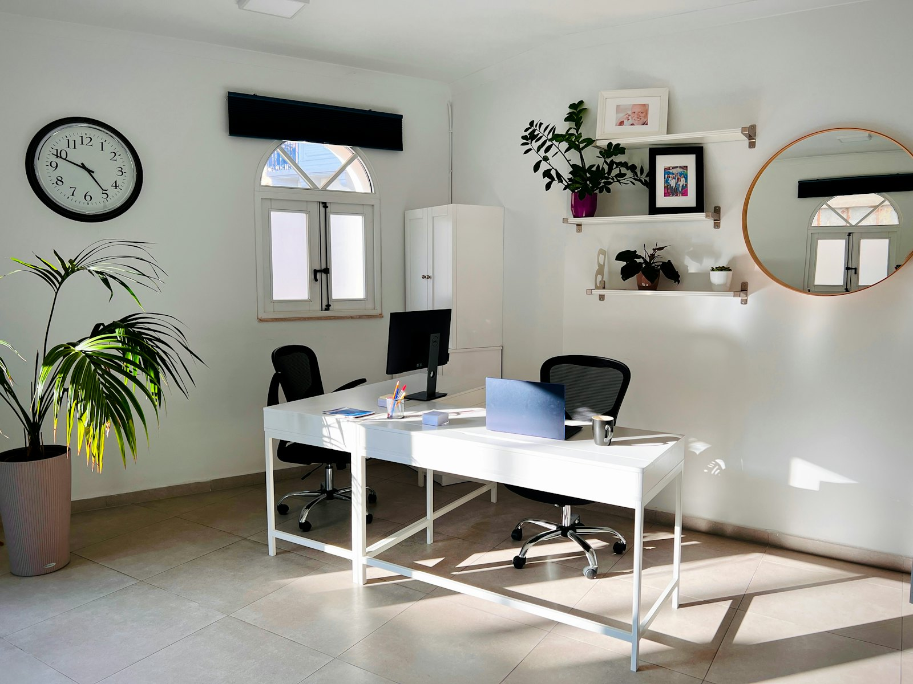

Kurze Empfehlung
Für vollständige Fälle ist das Anfrageformular der beste Start, weil Gerät, Problem und Kontaktweg direkt ordentlich zusammenlaufen.
Fragen vorab
Diese Seite bündelt die Punkte, die vor Reparatur, Upgrade oder Datenrettung meist zuerst geklärt werden sollen.

Für vollständige Fälle ist das Anfrageformular der beste Start, weil Gerät, Problem und Kontaktweg direkt ordentlich zusammenlaufen.
Das hängt von Alter, Defekt, Leistungsbedarf und Kosten ab. Wenn ein Upgrade oder Ersatz sinnvoller ist, wird das klar gesagt.
Ja, oft deutlich. SSD- und RAM-Upgrades oder eine saubere Neuaufsetzung bringen meist den größten Unterschied.
Daten und Benutzerkonten werden bei kritischen Eingriffen früh mitgedacht. Wenn eine Sicherung sinnvoll ist, wird sie nicht übersehen.
Ja. Für schnelle Rückfragen ist das praktisch, für vollständige Fälle bleibt das Formular meist die beste Wahl.
Direkt über die Anfrageseite. Dort werden alle Angaben geordnet erfasst und die Rückmeldung kann gezielt vorbereitet werden.
Ja. Zusätzliche Infos wie Gerätemodell, Fotos oder genaue Fehlermeldungen können jederzeit nachgereicht werden.